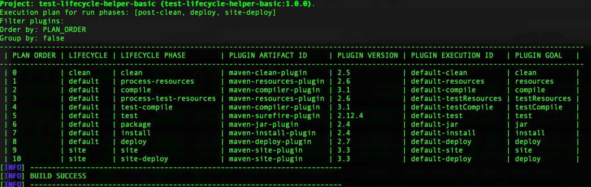
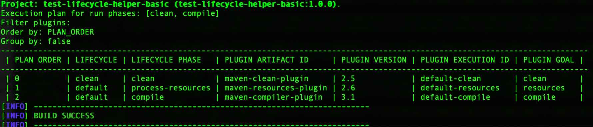
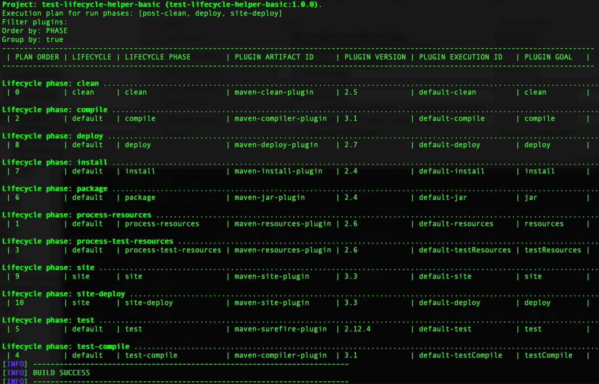
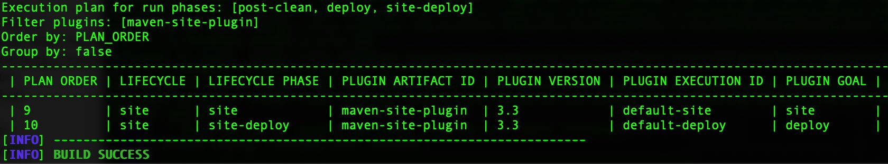
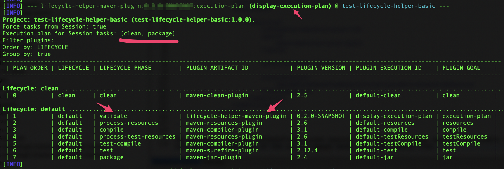

Maven
MavenUsage
In order to use plugin prefix you must activate the plugin group in your Maven settings.xml:
<pluginGroups>
<pluginGroup>it.serendigity.maven.plugins</pluginGroup>
</pluginGroups>
So you can execute the plugin with the command
> mvn lifecycle-helper:execution-plan
Otherwise you can execute the plugin with the command
> mvn it.serendigity.maven.plugins:lifecycle-helper-maven-plugin:execution-plan
Brief examples on how to use goal execution-plan from COMMAND LINE
Note: For all the examples we used the pom from the integration test project. View pom
Display execution plan of a project
If you run execution-plan goal without arguments all maven lifecycle/phases are displayed in the execution plan order.
> mvn it.serendigity.maven.plugins:lifecycle-helper-maven-plugin:execution-plan

It is possible to indicate a specific lifecycle tasks with parameter lifecycle-helper.tasks. For example if you want to list the execution plan only for clean and compile phases.
> mvn it.serendigity.maven.plugins:lifecycle-helper-maven-plugin:execution-plan -Dlifecycle-helper.tasks=clean,compile

Group by/Order by execution plan result
You can order and group and order the execution plan result by any column of the table filling the parameters lifecycle-helper.groupby lifecycle-helper.orderby. Allowed values for orderby are the values of MavenExecutionAttribute enum.
Following two examples with run phases parameter compile:
- group by true /order by LIFECYCLE (the screenshot was taken from WINDOWS OS to show the differences with MAC OS )
- group by true /order by PLUGIN
> mvn it.serendigity.maven.plugins:lifecycle-helper-maven-plugin:execution-plan -Dlifecycle-helper.orderby=LIFECYCLE -Dlifecycle-helper.groupby

> mvn it.serendigity.maven.plugins:lifecycle-helper-maven-plugin:execution-plan -Dlifecycle-helper.orderby=PLUGIN -Dlifecycle-helper.groupby

Filter execution plan by plugins
Moreover it's possible to filter the result to a specific plugin filling the parameter lifecycle-helper.filter.plugins.
mvn it.serendigity.maven.plugins:lifecycle-helper-maven-plugin:execution-plan -Dlifecycle-helper.filter.plugins=maven-site-plugin

How to use the plugin goals in your POM
To use the plugin goals in your POM configure it the plugins of the POM.
Below is a configuration example with execution-plan goal configured in the validate phase.
<plugin>
<groupId>it.serendigity.maven.plugins</groupId>
<artifactId>lifecycle-helper-maven-plugin</artifactId>
<version>(insert-last-stable-version)</version>
<executions>
<execution>
<id>display-execution-plan</id>
<goals>
<goal>execution-plan</goal>
</goals>
<phase>validate</phase>
<configuration>
<paramForceTasksFromSession>true</paramForceTasksFromSession>
</configuration>
</execution>
</executions>
</plugin>
The parameter paramForceTasksFromSession execute the tasks of a maven session and disable the parameter paramRunTasks in order to list the execution-plan of the current maven tasks run from command line.
After configured the pom.xml if you run the following command:
mvn clean package
This is an example of the output:
